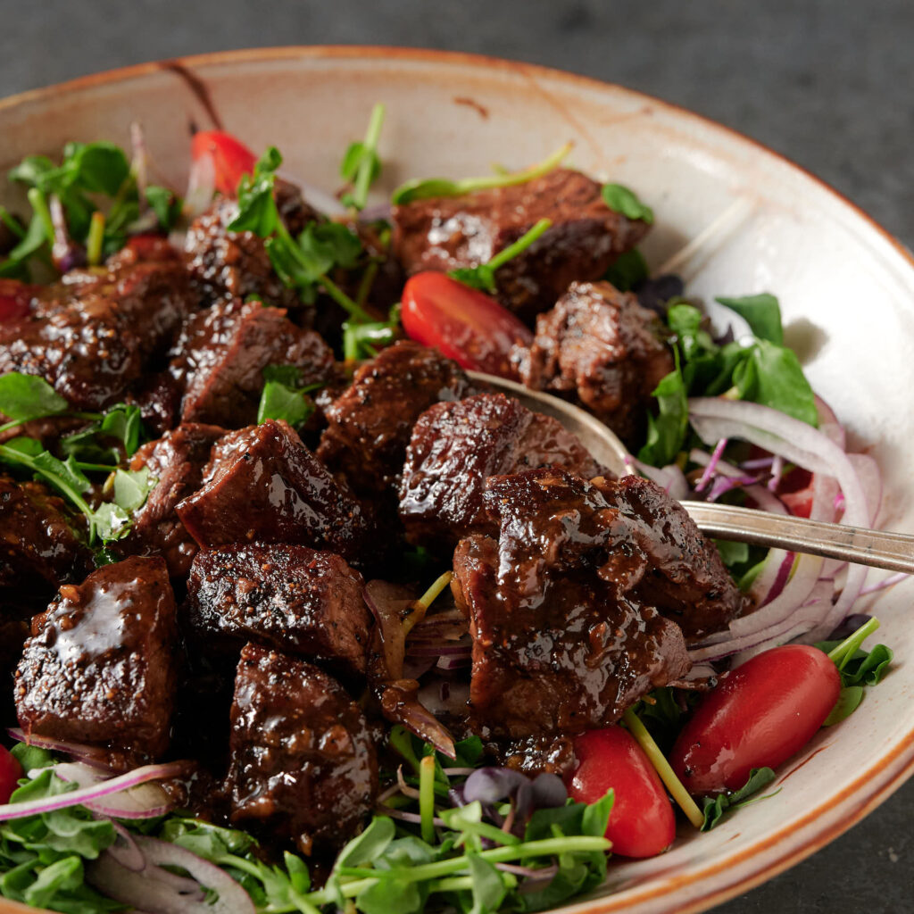

Shaking Beef (Bò Lúc Lắc)

Ingredients
Beef Marinade
- 2 Pounds of beef sliced into cubes (use sirloin or some other high fat content beef cut)
- 1 Teaspoon of black pepper
- 1 Teaspoon of sugar
- 1 Teaspoon of salt
- 1 Tablespoon of vegetable oil
- 1 Tablespoon of mushroom seasoning or chicken bouillon
- 3 Cloves of garlic minced
Stir Fry Sauce
- 3 Tablespoons of butter
- 1 Onion sliced thinly
- 2 Cloves of garlic minced
- 3 Tablespoons of soy sauce
- 2 Teaspoons of fish sauce
- 2 Tablespoons of honey
- 2 Tablespoons of rice vinegar
- 2 Teaspoons of sugar
- 1 Tablespoon of mushroom seasoning or chicken bouillon
Dipping Sauce
- 4 Teaspoons of lime juice
- 1 Teaspoon of salt
- 1 Teaspoon of black pepper
Other
- 1 Sprig of watercress with lower part of stems removed
- 1 Handful of grape tomatoes cut into halves
- Cooked white rice
Instructions
- Mix all Marinade ingredients into a bowl and let marinate overnight.
- On medium high heat, add tablespoon of butter to skillet. Wait until fully melted and add half of beef cubes.
Let beef sear for a min or two per side. Remove beef. Repeat for second half of beef cubes.
- On medium low heat, add last tablespoon of butter to skillet and stir fry onions until slightly caramelized.
- Add garlic and continue to caramelize. While caramelizing, mix the rest of the Stir Fry Sauce ingredients in a bowl.
- Add Stir Fry Sauce to skillet and stir mixture for 2-3 minutes until slightly thickened.
- Toss in cubed beef until fully coated. Remove skillet from heat.
- Mix together Dipping Sauce ingredients.
- Serve cubed beef mixture on top of bed of watercress and tomatoes with Dipping Sauce on the side.